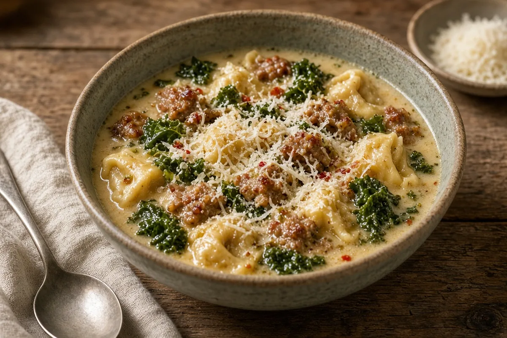

Slow Cooker Sausage, Kale & Tortellini Soup
Browned Italian sausage simmered all afternoon in bone broth with herbs, finished with cheese tortellini, kale and a splash of cream.

Adapted from The Homemade Kitchen
6 servings
By
Yield: 6 servings
Prep:
Cook:
Total:
Difficulty: Easy
Ingredients
- 1 lb bulk Italian sausage, mild or hot
- 1 medium yellow onion, diced
- 2 cloves garlic, minced
- 5 cups chicken bone broth
- 1 tsp kosher salt
- 1/2 tsp black pepper
- 1/2 tsp dried oregano
- 1/2 tsp dried basil
- 1/2 tsp red pepper flakes, optional
- 1 Parmesan rind, optional
- 9 oz refrigerated cheese tortellini
- 3 cups kale, ribs removed and chopped
- 1/2 cup heavy cream
- 1/2 cup Parmesan cheese, grated, for serving
Instructions
- Brown the sausage and onion in a HexClad skillet over medium-high heat, breaking up the sausage, until no pink remains, 8 minutes. Add the garlic and cook 1 minute more.
- Scrape the sausage, onion, garlic and drippings into the slow cooker. Add the broth, salt, pepper, oregano, basil, red pepper flakes and Parmesan rind. Cover and cook on Low 4 hours (or High 2 hours).
- Stir in the tortellini, cover, and cook on Low until tender, 30 minutes for refrigerated (about 45 minutes for frozen).
- Fish out the Parmesan rind. Stir in the kale, cover, and cook until wilted, 10 minutes.
- Stir in the cream and heat through, 2 minutes. Taste and adjust the salt.
- Ladle into bowls and top with the Parmesan, 3 minutes.
Notes: The Parmesan rind and bone broth add depth; if you skip the rind, you may need a pinch more salt. For leftovers, the tortellini keeps soaking up broth, so add a splash of broth when reheating. Frozen or dried tortellini work too; just cook until tender.